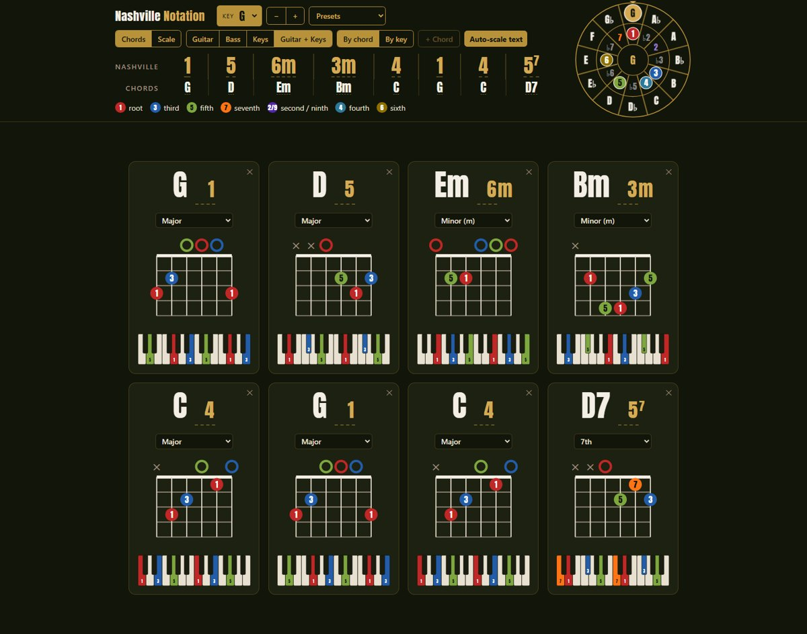
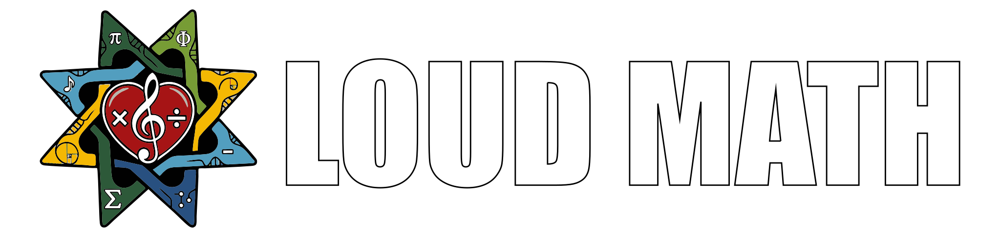
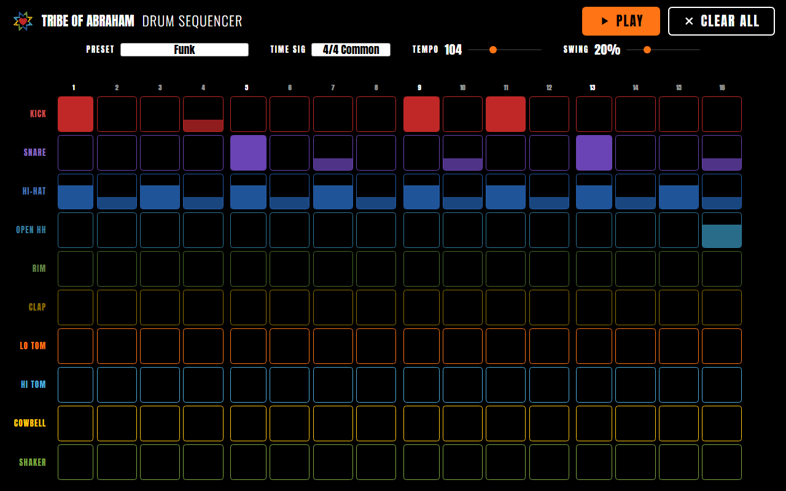
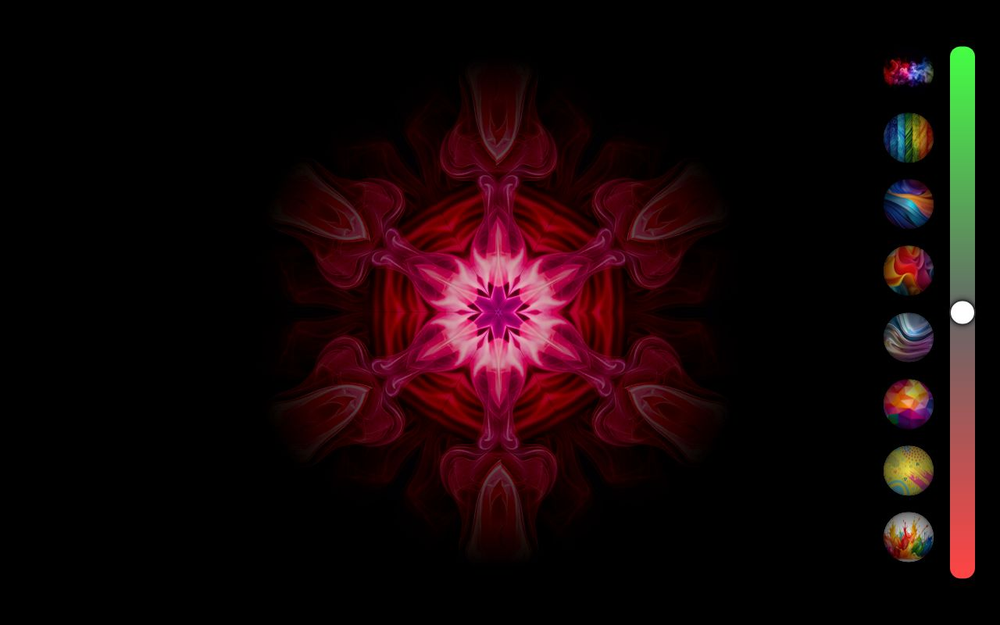

Open Source Music Education
Play together.
Right now.
Nashville Notation. Pick a key on the wheel and see every chord as its Nashville number and its name, with diagrams for guitar or bass and color-coded piano keys, each note marked by its place in the chord.
Change chord types, transpose, start from a preset song, or switch to scales. Built to be readable across a room: run it on a TV and everyone at the session can see where they are.

Click to open Nashville Notation
Open Source Math Education
Math you can hear.
A new branch of Tribe of Abraham — interactive tools that turn math concepts into sound, sight, and story. Built for classrooms, community workshops, and anyone curious. Same open source, same browser-first philosophy.
Fraction Drum Machine
The denominator is the beat. Stack fractions — quarter notes, triplets, sixteenths — and hear them layer into polyrhythms. Each row is a different instrument with multi-level velocity. Change a fraction, and the groove reorganizes itself. The math of African polyrhythms, visible and audible at the same time.
Phat Decimals
Fractions dropped the 4/8/16 grid — decimals drop the grid entirely. Type any decimal as a step value and slice the measure into rhythms Western music never found. 0.1 for base-ten grooves. 0.15 for something phat. Make the measure itself 0.875 and watch a 7/8 feel emerge from numbers a calculator understands. Polyrhythm by way of decimal expansion.
Hardware
Built by hand.
Open to everyone.
The first version was a simple cherry slab — didn't even have a bottom. An M0 SAMD XIAO, a single RGB LED, and four machined aluminum buttons. No WiFi. No firmware updates. No web UI. It's been running for four years and still lives on the Moog station because it's awesome at what it does.
The new version is built on the ESP32-S3 — WiFi hotspot configuration, browser-based firmware flashing, and a fully programmable MIDI foot controller. Curly maple enclosure, handmade at Ragamuffin Workshop. Looping is just one function. The entire codebase is open source and the firmware flashes from a web page.
No apps. No drivers. No computer required to configure it. Plug it in, connect to its hotspot, and set it up from your phone.

Front: the current ESP32-S3 in curly maple. Back: the original cherry slab — four years on the Moog station and counting.

Configure over WiFi — no app required.
Drum Sequencer
Rhythms you've never heard.
Most people only know the rhythms they grew up with. This sequencer is loaded with patterns from musical traditions around the world — so you can hear how a 7/8 Balkan groove feels, what makes an Afrobeat pattern lock in, or why a bossa nova swings differently than a shuffle. Pick a pattern and press play.

Click to open the Drum Sequencer →Kaleidoscope
Not music. Just cool.
This has absolutely nothing to do with music education. But we built it, it's mesmerizing, and we're not taking it down. Twelve mirrored slices, pure HTML5 and CSS transforms — pick a pattern, control the speed, and lose a few minutes.

Click to open the Kaleidoscope →Open Source
Built in the open.
Yours to use.
Every tool on this site is free and open source — MIT licensed, hosted on GitHub, available for anyone to use, fork, or contribute to. Teachers, developers, musicians, and community organizers are all welcome.
If you're building something in this space — music education, community music-making, accessible theory tools — we want to work with you.
- Use any tool freely in your classroom or community
- Fork and adapt for your own context
- Contribute code, translations, or chord data
- Commission custom tools through Ragamuffin Studios
Repositories
All source code lives on GitHub. Everything is MIT licensed unless otherwise noted.
-
View →tribeofabraham / nashville-reactNashville Number System interactive tool
-
View →tribeofabraham / drum-sequencerWorld rhythm explorer — drum patterns from global traditions
-
View →tribeofabraham / kaleidoscopeHTML5 interactive kaleidoscope
-
tribeofabraham / midi-foot-pedalESP32-S3 pedal firmware & 3D-printable enclosure — web UI hotspot config
-
View →tribeofabraham / midi-foot-pedal-flasherBrowser-based WebUSB firmware flash utility
Get Involved
Join the Tribe.
Whether you want to contribute code, use the tools in your community, or commission something new — reach out.